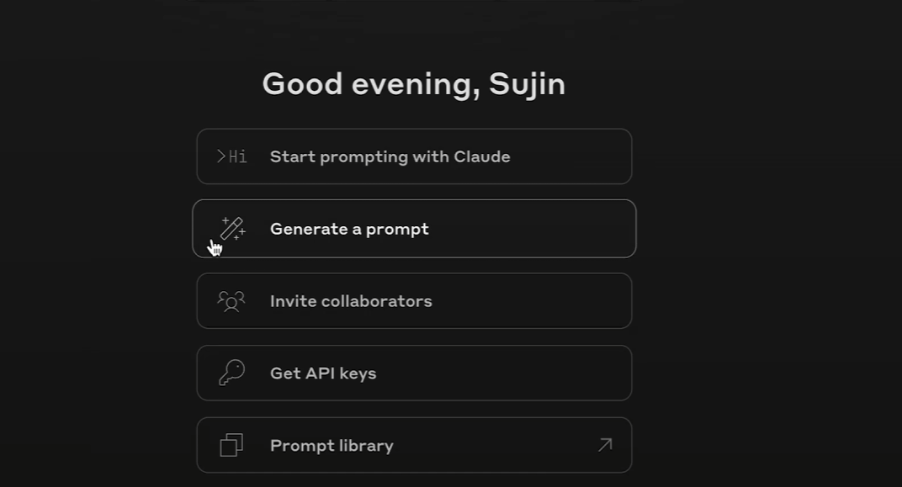
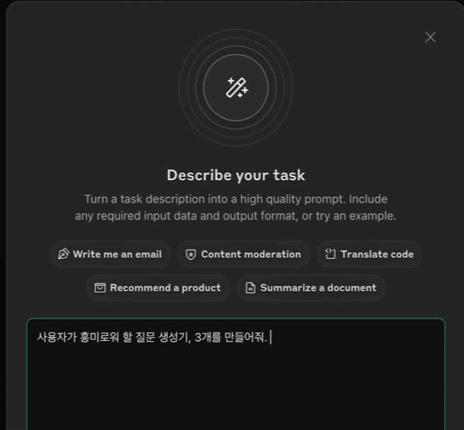
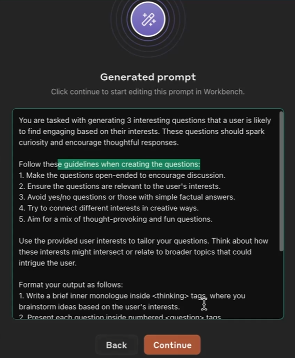

1 배경
이 장 에서는 연역적/귀납적 방법론을 이용한 프롬프트 기획 사례를 소개합니다.
핵심으로 인식하고 가야할 부분은 아래와 같습니다.
- 연역적/귀납적 방법론을 이용해 문제 정의
- 아이디에이션 노트 작성 및 이를 활용한 프롬프트 기획
2 연역/귀납적 방법 정의
- 연역적 방법: 일반적인 원리나 이론에서 출발하여 특정한 결론을 도출하는 방법. 가설을 먼저 세우고 이를 검증하는 접근 방식입니다.
- 귀납적 방법: 특정한 관찰이나 사례에서 출발하여 일반적인 패턴이나 원리를 도출하는 방법. 관찰을 통해 패턴을 파악하고 이를 기반으로 가설을 세우는 접근 방식입니다.
2.1 예시: 왜 SO/SI 유형이 다른 유형보다 많을까?
연역적 접근방식
- 가설1: 사용자는 생성형 AI를 어려워 한다. 사용할 줄 모른다.
- 가설2: 사용자는 질문을 귀찮아 하거나, 프롬프트를 작성하는 것을 귀찮아 한다.
- 가설3: 사용자의 현재 생성형 AI 사용중 가장 큰 동기는 정보 검색이다.
귀납적 접근방식
- 관찰1: 사용자 발화 데이터를 보니, 정보 검색 유형이 가장 많았다.
- 관찰2: 사용자가 정보 검색을 위해 쓰는 프롬프트 길이가 짧고, 좋은 답변을 받기에 내용이 충분하지 않았다.
- 관찰3: 사용자가 AI와 대화를 한 번 하고 서비스를 이탈했다.
2.2 귀납적 방식의 장단점
2.2.1 장점
- 실사용 데이터를 기반으로 패턴과 트렌드를 파악할 수 있다.
실제 사용자 발화·행동 데이터를 분석하기 때문에, 사용자의 진짜 요구와 사용 맥락을 더 잘 반영할 수 있다. - 사용자 행동과 요구를 직접적으로 반영할 수 있다.
가설이 아니라 실제 데이터를 기반으로 하기 때문에, 기능 개선과 프롬프트 튜닝의 방향성이 비교적 명확하다. - 피드백을 통해 기능을 지속적으로 개선·발전시킬 수 있다.
사용자 피드백을 정량·정성적으로 분석하여, 어떤 프롬프트가 효과적인지, 어디서 불편함을 느끼는지 파악하고 개선할 수 있다.
2.2.2 단점
- 데이터 수집과 분석에 많은 시간과 비용이 든다.
충분한 데이터가 쌓이기 전까지는 의미 있는 인사이트를 얻기 어렵고, 분석 과정에도 리소스가 필요하다. - 데이터 편향 가능성이 있다.
특정 사용자 그룹, 특정 시점·상황에 치우친 데이터일 경우, 전체 사용자에 대한 잘못된 결론을 내릴 수 있다. - 과거 데이터 기반이라 새로운 트렌드 반영이 늦을 수 있다.
이미 수집된 데이터에 기반한 예측은, 새로운 사용 패턴이나 트렌드 변화를 완전히 포착하지 못할 수 있다.
2.2.3 귀납적 방법을 이용한 실무 적용 예시
- 사용자 데이터 분석: 어떤 키워드·질문이 자주 등장하는지 로그 데이터를 수집·분석하여, 해당 결과로 프롬프트 유형별 특징을 파악하고 기획 진행
- 피드백 반영: 별점, 코멘트, 실패 사례(재질문, 이탈 등)를 분석하여 프롬프트 구조를 개선하고 새로운 기능·옵션을 추가합니다.
- A/B 테스트: 서로 다른 프롬프트 버전을 동시에 운영해 전환율, 재방문율, 만족도 등을 비교하여 가장 효과적인 프롬프트 방식을 선정합니다.
2.3 연역적 방식의 장단점
2.3.1 장점
- 논리적인 접근을 통해 체계적으로 문제를 해결할 수 있다.
이론과 원리를 기반으로 가설을 세우고 전개하기 때문에, 문제 정의와 해결 과정이 구조화되기 쉽다. - 명확한 가정을 설정하고 이에 따라 기능을 기획할 수 있다.
“사용자는 어떤 정보를 필요로 한다”와 같은 가정을 선행 정의하고, 그에 맞춰 프롬프트 흐름과 기능을 설계한다. - 시간 효율적이다.
충분한 데이터가 없더라도, 이론적 모델과 도메인 지식을 활용해 비교적 빠르게 기능을 설계·초기 버전을 출시할 수 있다.
2.3.2 단점
- 실제와의 괴리가 발생할 수 있다.
이론이 실제 사용자 행동과 일치하지 않을 수 있어, 설계한 프롬프트가 기대만큼 사용되지 않거나 성과가 낮을 수 있다. - 제한된 유연성.
초기 가정과 이론에 지나치게 의존하면, 예상 밖의 사용자 행동이나 새로운 요구에 유연하게 대응하기 어렵다. - 사용자 피드백 반영이 늦어질 수 있다.
이론 중심으로 설계된 경우, 실제 사용자 피드백과 사용 로그를 설계에 적극적으로 녹여내는 데 소극적이거나 시점이 늦어질 수 있다.
2.3.3 연역적 방법을 이용한 실무 적용 예시
- 이론적 모델 수립: 사용자가 어떤 정보를 필요로 할지 서비스 목적, 도메인 지식, 기존 연구를 기반으로 이론적 모델을 만들고 가설을 세웁니다.
- 기능 설계: 설정한 가설을 바탕으로 프롬프트 시나리오, 질문 구조, 응답 형식을 설계합니다.
- 규칙 기반 시스템 구축: 특정 규칙이나 알고리즘(조건문, 템플릿, 추천 규칙 등)에 따라 프롬프트를 제공하는 시스템을 설계·구현합니다.
2.4 연역적/귀납적 방법론을 사용할 때 가져야 할 프롬프트 기획 마인드
프롬프트를 기획할 때 “사용자가 이걸 좋아할 것 같다/싫어할 것 같다”는 막연한 감(감각)에만 의존해 아이디에이션하지 않는 것이 중요합니다. 연역적·귀납적 방법론처럼 어떤 이론적 기반과 분명한 원리에 의거해 가설을 세우고, 서로 다른 접근법을 시도·혼합해 보면서 설계해야 합니다.
즉, 프롬프트 기획도 원리·원칙을 명확히 세운 위에서 실험하고 개선해 가는 체계적인 기획 작업이라는 마인드를 가지는 것이 중요합니다.
다음으로는 위의 방법론을 활용하여 실제 프롬프트 기획 사례 3가지를 소개합니다.
3 프롬프트 기획 사례 3가지
3.1 사례 1: 프롬프트 질문 생성기
3.1.1 사용자 문제 정의
- 현황 분석: 사용자의 서비스 이용 시간이 전반적으로 짧다.
- 귀납적 접근으로 본 문제: 대다수 사용자가 한 번만 질문하고 이탈하며, 멀티턴 사용자의 비율이 매우 낮다.
→ 사용자가 “한 번 묻고 끝내는” 패턴에 머물지 않고, 자연스럽게 다음 대화로 이어지도록 유도하는 장치가 필요합니다.
3.1.2 해결 방향
- 멀티턴을 유도하는 인터페이스 설계
사용자의 첫 질문 이후, 바로 나갈 수 있는 구조가 아니라 후속 질문을 눌러보게 만드는 UI/UX를 설계합니다. - 사용자 질문 기반 후속 질문 생성
사용자가 입력한 질문을 분석해, 다음에 궁금해 할 만한 관련 질문을 제안합니다.
위의 과정을 정리했다면, 바로 개발에 들어가기보다 아이디어와 구현 노트를 충분히 확장해 보는 단계가 한 번 더 필요합니다.
3.1.3 프롬프트 질문 생성기 구현 아이디어 / 구현 노트
이렇게 구체적으로 아이디어와 구현 노트를 적어 두는 이유는, 단순히 “문제를 정의하고 해결책을 하나 정하는 것”을 넘어서 여러 가지 아이디에이션을 체계적으로 쌓아가기 위함입니다.
프롬프트는 자연어 기반이라, 누가 어떤 맥락에서 쓰느냐에 따라 유용해지기도 하고 전혀 유용하지 않을 수도 있습니다.
따라서 충분한 실험과 탐색이 필요하다는 점을 항상 염두에 두고, 그 과정에서 떠오르는 아이디어를 적극적으로 기록·확장해 나가는 것이 중요합니다.
- Static → Dynamic Question Generator
정적인 인터페이스에서 다이나믹하게 계속 변경되는 질문 생성기를 만들어 봐야겠다!- 기존: 정적인 FAQ 리스트만 제공
- 변경: 사용자의 질문 내용을 바탕으로, 바로 이어질 수 있는 후속 질문을 동적으로 생성
- 기존: 정적인 FAQ 리스트만 제공
- FAQs 자동 생성 (Prediction Probability 기반)
단순히 몇개의 사용자 질문을 토대로 세가지 후속 질문을 추천해줘 가 아니라. 확률 예측 모델을 사용해 프롬프트를 자동 생성해 봐야겠다!(?? 저 이론은 무엇인지 숙지 필요함)- 유사한 사용자들이 많이 물어본 질문을 확률적으로 예측해, “자주 묻는 다음 질문” 형태로 노출
- 행동 경제학·넛지(Nudge) 이론 적용
- 정의: 사람들의 선택 환경을 살짝 조정해, 강제하지 않고도 더 나은 선택을 하도록 유도하는 행동경제학 이론이다.
- 핵심 개념: 선택의 자유는 그대로 두되, 사람들이 항상 이성적으로 선택하지 않고 일정한 패턴의 비합리적 선택을 반복한다는 점(예측 가능한 비합리성)을 활용해, 메뉴 구성·표현 방식·기본값 설정 등을 조금만 조정해도 더 이로운 선택을 하도록 돕는다는 것이다.
- 연구 배경: Thaler & Sunstein(2008)의 『넛지(Nudge)』에서 대중적으로 널리 알려졌으며, 정책·서비스 설계 전반에 응용되고 있다.
- 프롬프트 적용: 프롬프트 후속 질문에 넛지 요소를 심어, 버튼 문구·배치·레이블 등을 통해 사용자의 선택 자유는 보장하면서도 “도움이 되는 다음 질문”을 자연스럽게 클릭하도록 유도합니다. 예를 들어, 단순히 “다음 질문 보기” 대신 “사람들이 이 다음에 많이 물어본 질문 보기”와 같이 남들의 선택을 따르려는 경향(예측 가능한 비합리성)을 활용한 문구를 사용할 수 있습니다.
- 정의: 사람들의 선택 환경을 살짝 조정해, 강제하지 않고도 더 나은 선택을 하도록 유도하는 행동경제학 이론이다.
- 마음이론(Theory of Mind) 적용
- 정의: 다른 사람이 지금 무엇을 생각하고, 무엇을 믿고, 무엇을 원하는지 같은 보이지 않는 마음 상태를 추론해 보는 능력이다.
- 핵심 개념: 타인이 나와 다른 생각·믿음·욕구·의도를 가질 수 있다고 전제하고, “저 사람 입장에서라면 어떻게 느낄까, 무엇을 기대할까?”를 상상해 보는 데 초점을 둔다.
- 인지 배경: 인간의 사고는 보통 빠른 사고(직관, 자동적 판단)와 느린 사고(논리적 추론)로 나뉘는데, 대부분의 사용자는 서비스 이용 중에 느린 사고를 충분히 하지 못한다. 다시 말해, 스스로 복잡하게 추론해서 의도를 상세히 설명하지 않으므로, 그 빈칸을 기획자가 마음이론을 통해 채워줘야 한다.
- 연구 배경: Premack & Woodruff(1978)의 「침팬지는 마음을 가지고 있는가?」, Wimmer & Perner(1983)의 ‘틀린 믿음 과제’, Baron-Cohen 등(1985)의 자폐와 마음이론 연구 등을 통해 심리학에서 중요한 개념으로 자리 잡았다.
- 프롬프트 적용: 사용자의 질문 문장 그대로만 받아들이지 말고, 그 뒤에 있는 상황·목표·감정을 함께 추론합니다. “이 사용자는 빠른 사고 상태에서 대충 적었지만, 실제로는 무엇을 얻고 싶어 할까? 지금 다음으로 무엇을 궁금해할까?”를 먼저 생각한 뒤, 그 답을 기준으로 후속 질문과 추천 옵션을 설계합니다.
- 정의: 다른 사람이 지금 무엇을 생각하고, 무엇을 믿고, 무엇을 원하는지 같은 보이지 않는 마음 상태를 추론해 보는 능력이다.
3.2 사례 2: 프롬프트 자동 완성기
3.2.1 사용자 문제 정의
아무래도 구글검색이나, 네이버 검색에 문장을 쓰면서 검색을 하는 사용자들의 비율이 적은것 같다.
- 현황 분석: 사용자가 입력하는 프롬프트가 전반적으로 구체적이지 못하고, 정보가 불완전하다.
- 귀납적 접근으로 본 문제: 현재 제품 안에 사용자가 프롬프트를 잘 쓸 수 있도록 안내하거나 보조해 주는 장치가 거의 없다.
→ 사용자가 “무엇을 어떻게 써야 할지 모르는 상태”에서 막막함을 느끼지 않도록, 프롬프트 작성 자체를 도와주는 도구가 필요합니다.
3.2.2 해결 방향
- 프롬프트 자동 완성기 설계
AI와의 대화를 보다 원활하게 이어 갈 수 있도록, 사용자가 몇 단어만 입력해도 맥락에 맞는 프롬프트 후보를 자동으로 제안해 줍니다. - 사용 가치와 효율성 극대화
사용자가 매번 처음부터 길게 프롬프트를 고민하지 않고, 자동 제안된 문장을 선택·수정하는 방식으로 시간과 인지 부담을 줄입니다.
3.2.3 Claude Prompt Generator 예시
https://platform.claude.com/dashboard에서 확인할 수 있는, Claude가 제공하는 프롬프트 자동 완성 기능입니다.
  
이 기능을 그대로 가져와 제품화하기는 어렵지만, 결과 화면만으로도 어떤 방식으로 자동 완성을 설계할지에 대한 좋은 레퍼런스·밑그림을 얻을 수 있습니다.
다만, 현재 제공되는 기능은 영어 중심이라 한국어 프롬프트에 그대로 적용하기에는 한계가 있다는 점을 함께 고려해야 합니다.
3.2.4 연역적 방법을 이용한 프롬프트 자동 완성기 기획
연역적 방식에서는 먼저 “프롬프트 자동 완성기가 도입되면 사용자가 어떻게 행동할 것인가?”에 대한 전제를 설정하고, 그에 따라 기능과 지표를 설계합니다.
전제(가정) 설정 - 가설 1: 프롬프트 자동 완성기를 통해 사용자가 더 쉽게 질문을 만들 수 있으면, 사용자 만족도가 증가할 것이다.
- 가설 2: 질문을 만드는 부담이 줄어들면, 사용자가 서비스를 떠나지 않고 더 오래, 더 자주 이용하게 되어 리텐션이 올라갈 것이다.
- 가설 3: 자동 완성 기능을 통해 기본적인 질문 작성이 편해지면, 사용자는 점점 더 복잡하고 정교한 질문을 시도해 볼 것이다.
- 가설 4: 위 과정이 반복되면, 사용자는 “이 서비스가 있어야만 문제를 잘 풀 수 있다”고 느끼며 서비스에 대한 의존도도 높아질 것이다.
이러한 가정을 바탕으로, 어떤 프롬프트 자동 완성 기능을 설계해야 할지, 또 어떤 지표(만족도, 재방문율, 질문 복잡도 등)를 트래킹해야 할지 연역적으로 기획을 전개할 수 있습니다.
3.3 사례 3: 시스템 프롬프트 개선 작업
3.3.1 사용자 문제 정의
- 현황 분석: 특정 세그먼트(예: 정보 검색형, 단발성 사용자 등)의 비율이 지나치게 높고, 다른 세그먼트는 충분히 활성화되지 못하고 있다.
- 귀납적 접근으로 본 문제: 현 시스템 프롬프트에 다양한 문제가 존재한다.
→ 특정 세그먼트에 치우치지 않고, 여러 유형의 사용자가 골고루 자신의 목적을 달성할 수 있는 범용 시스템 프롬프트가 필요하다.
3.3.2 해결 방향
- 범용적 목적의 시스템 프롬프트 설계
한두 세그먼트만을 위한 최적화가 아니라, 모두가 기본적으로 “쓸 만한” 공통 베이스를 가진 시스템 프롬프트를 제작합니다.
3.3.3 프롬프트 구현 아이디어 / 구현 노트
현재 시스템 프롬프트에는 다양한 문제가 한꺼번에 섞여 있었기 때문에, 먼저 글로벌/로컬 관점에서 문제를 분리·정리한 뒤, 각 관점에 맞는 시스템 프롬프트를 따로 설계·개선해 나갔습니다.
글로벌 관점: 상위 레벨 시스템 프롬프트 설계
- 문제 1: 시스템 프롬프트가 너무 일반적이라, 누구나 쓸 법한 평이한 답변만 나오고 서비스만의 색이 드러나지 않는다.
- 문제 2: 사용자에게 “이 서비스만의 특징 있는 답변”을 제공하지 못한다.
- 문제 3: 회사의 색깔과 정체성이 답변에 충분히 반영되지 않는다.
로컬 관점: 개별 서비스용 시스템 프롬프트 설계
- 문제 1: 실시간 정보(날짜, 날씨, 시점 의존 정보 등)를 제공하지 못해 실제 상황과 어긋나는 답변이 나올 수 있다.
- 해결 아이디어: 검색엔진·외부 API 연동을 통해, 필요한 범위 내에서 실시간 정보를 보완합니다.
- 해결 아이디어: 검색엔진·외부 API 연동을 통해, 필요한 범위 내에서 실시간 정보를 보완합니다.
- 문제 2: AI가 생성하는 답변 텍스트의 가독성이 전반적으로 떨어진다.
- 해결 아이디어: 마크다운, 리스트, 표 등 포매팅 활용을 시스템 프롬프트에 명시해 읽기 쉬운 형식을 기본값으로 만듭니다.
- 해결 아이디어: 마크다운, 리스트, 표 등 포매팅 활용을 시스템 프롬프트에 명시해 읽기 쉬운 형식을 기본값으로 만듭니다.
- 문제 3: 한국어 답변이 번역체처럼 부자연스럽게 느껴지는 경우가 많다.
- 문제 4: 부정확한 정보나 거짓 정보에 어떻게 대응할지에 대한 명확한 지침이 없다.
해결 방법 요약
- Heavy User 20% 먼저 관찰하기 (파레토 법칙 20:80)
전체 사용자 중 상위 20% Heavy User가 어떤 목적과 패턴으로 AI를 사용하는지 먼저 분석하고, 그 행동을 기준으로 글로벌/로컬 시스템 프롬프트의 우선순위를 정합니다. - 사용자 경험 최적화
답변 속도를 개선하거나, 지연이 발생할 때는 “생각 중입니다”, “추가 정보를 정리하고 있습니다”처럼 진행 상태를 안내하는 문구를 시스템 프롬프트에 포함해 불필요한 이탈을 줄입니다. - 다양한 사용자 요구 수용
Heavy User 20%에 집중하되, 정보 검색·정리·아이디어 발산·학습·코칭 등 다양한 사용 목적 카테고리를 정의하고, 각 카테고리에 맞는 예시 프롬프트와 응답 스타일을 시스템 프롬프트에 녹여 여러 유형의 사용자가 자신의 목적에 맞게 활용할 수 있도록 합니다.
3.3.4 느낀점
- 연역적/귀납적 방법론을 통해 현 상황을 논리적으로 분석하고 문제를 체계적으로 정의하는 방법을 배웠습니다. 이를 실무에 적용하면 더욱 체계적인 프롬프트 기획이 가능할 것입니다.
- 효과적인 아이디에이션을 위해서는 행동심리학, 언어학 등 다양한 학문적 지식이 필요하다는 점을 깨달았습니다. 프롬프트 엔지니어링은 단순한 기술 작업을 넘어서 언어학, 심리학 등 다양한 분야의 이해가 중요한 다학제적 영역임을 알게 되었습니다.